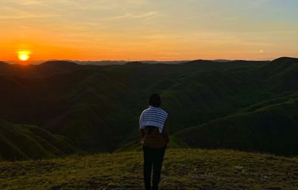
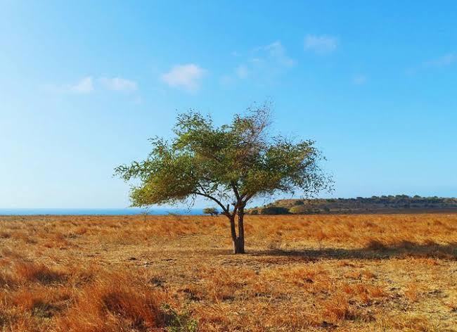
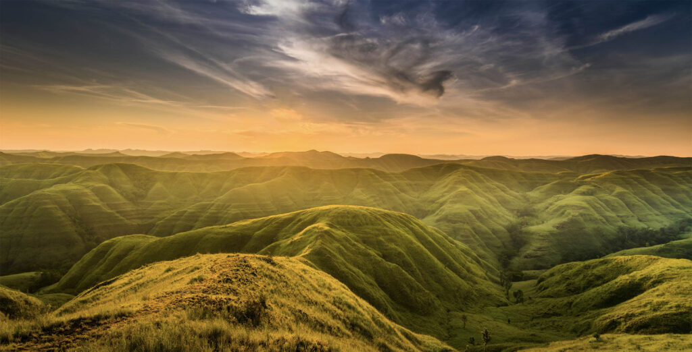
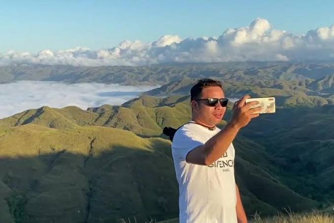

WISATA ALAM
Savana Sumba
Hamparan padang rumput dengan panorama luas dan suasana alam yang menenangkan.
Informasi wisata →Nusa Tenggara Timur, Indonesia
Savana keren di Sumba sudah menjadi hal yang dikenal oleh banyak orang, terutama yang sudah mengetahui keindahan alam di Sumba. Menjadi surganya savana dan perbukitan yang menawan, tak salah jika semakin banyak wisatawan yang penasaran dengan bagaimana kecantikan padang gurun savana dan bukit-bukit Sumba yang masih asri dan terjaga. Dari ujung hingga ke ujung pulaunya, Sumba menyimpan banyak sekali tempat wisata alam yang sangat memesona dan cantik sekali.
Jelajahi Sekarang →
TENTANG SAVANA SUMBA
Savana Puru Kambera di Sumba Timur adalah "Afrika Kecil" Indonesia yang menyuguhkan pesona padang rumput tak bertepi berlatar langit biru yang megah. Saat musim kemarau tiba, bentang alam ini bertransformasi menjadi hamparan cokelat keemasan yang gersang namun eksotis, menciptakan atmosfer sabana liar yang sangat autentik.
Keunikan utamanya terletak pada kehadiran kawanan kuda Sandelwood liar yang hidup bebas dan kerap terlihat merumput di antara pepohonan kering, memberikan lanskap hidup yang dramatis. Berjarak hanya sekitar 25 kilometer dari Kota Waingapu, destinasi ini menjadi magnet bagi para petualang dan pencinta fotografi, terutama saat sore hari ketika golden hour menyelimuti seluruh sabana dengan cahaya keperakan yang magis.
Temukan keindahannya →JELAJAHI SUMBA
Nikmati panorama indah yang ada di Savana Sumba

Hamparan padang rumput dengan panorama luas dan suasana alam yang menenangkan.
Informasi wisata →

Nikmati lanskap perbukitan dan pemandangan alam yang memesona
Informasi wisata →
Abadikan momen perjalanan sambil menikmati suasana alam terbuka.
Informasi wisata →PENGALAMAN BERKESAN
Abadikan keindahan savana dan perubahan warna alam mengikuti musim.
Nikmati suasana sore di tempat yang aman dan diperbolehkan untuk pengunjung.
Kenali tradisi dan kekayaan budaya masyarakat Sumba dengan penuh hormat.
PERSIAPAN PERJALANAN
Pemandangan savana bisa berbeda antara musim hujan dan musim kemarau.
Siapkan air minum, topi, alas kaki nyaman, dan pelindung dari sinar matahari.
Jangan meninggalkan sampah atau merusak lingkungan selama perjalanan.